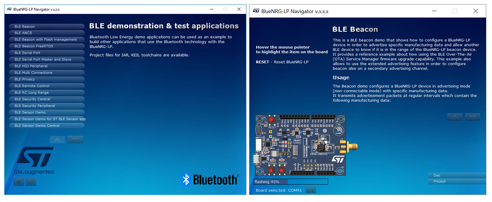
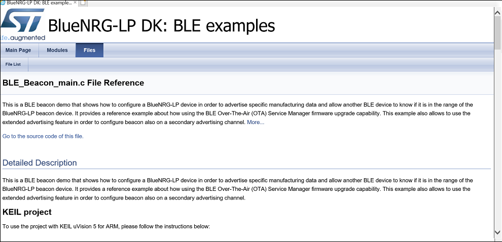

What is a BlueNRG-LP device?
- The BlueNRG-LP is low power, Bluetooth Low Energy (LE) system on chip, with 32bit core ARM Cortex-M0+ processor @64MHz and it is compliant with Bluetooth Core Specification version 5.x.
- It has 256 KB programmable Flash, 64 KB SRAM, MPU, and extensive peripheral set (6x PWM, 2x I2C, 2x SPI/I2S, SPI, USART, UART, PDM, 12-bit ADC SAR).
- It also provides the Bluetooth LE data length extension feature, LE 2 Mbps PHY, LE long range, LE extended advertising feature, GATT caching feature and Channel Selection Algorithm #2 feature.
- User can refer to the BlueNRG-LP datasheet (DS13282) for detailed information about the device features, peripherals & Bluetooth LE capabilities.
What is Bluetooth Low Energy (LE) technology?
- For people new to the Bluetooth Low Energy technology, some fundamentals are available on Bluetooth LE Stack v3.x Library programming guidelines (PM0269), Bluetooth low energy technology section.
- In particular, user can get a clear understanding about the Bluetooth LE features, layers (GAP, GATT, ATT, SM, L2CAP,HCI, Link & PHY) , devices roles (Master, Slave, Client, Server, Central, Peripheral) key information types (services & characteristics) and how to use them (read, write, notify, indicate).
Basic evaluation steps for dummies (no specific Bluetooth LE know how is required)
Get the STSW-BNRGLP-DK, BlueNRG-LP Development Kit(DK) HW/SW resources for evaluating BlueNRG-LP Bluetooth LE capabilities:
-
Order and buy an BlueNRG-LP development kit.
-
Get the STSW-BNRGLP-DK SW package and launch the related installer BlueNRG-LP DK-x.x.x.x-Setup.exe.
First basic step: Interact with Smarthpones world by running the ST Bluetooth LE Sensor application
-
Power on the BlueNRG-LP development kit by connecting to a PC USB port through a micro USB Cable or two batteries on battery holder (setting the JP2 jumpers accordingly).
-
On selected smarthphone, install the ST BLE Sensor smarthphone app available on Google Play Store (Android) or Apple web site respectively:
-
Load and run the BlueNRG-LP BLE_SensorDemo_BlueMS binary image on a BlueNRG-LP kit, and look for the BlueNRG-LP, BLE_SensorDemo_BlueMSapp application in discovery mode: BlueNRGLP device is detected on smarthphone display (prebuilt image is available on BlueNRG-LP SDK, Firmware/BLE_Examples/BLE_SensorDemo_BlueMSapp/{STEVAL-IDB011V1} folder)
-
Tap on BlueNRGLP: BlueNRG-LP ST Bluetooth LE Sensor application connects to the smarthphone and user can get graphical evidence of platform accelerometer (by plotting data) and environmental sensors (temperature and pressure plotting data).
Second basic step: use BlueNRG-LP Navigator
- BlueNRG-LP Navigator is an friendly GUI which lets you directly download and run the selected prebuilt application binary image on the BlueNRG-LP platforms without a SWD interface (it just requires a BlueNRG-LP development kit connected to a PC USB port)
- It provides demo applications description (html files) and access to board configurations and demo application source code if needed.
- BlueNRG-LP Navigator is available on STSW-BNRGLP-DK SW package on Start menu folder, ST BlueNRG-LP DK X.X.X, BlueNRG-LP Navigator.
- User is just requested to connect one or two BlueNRG-LP development kit on PC USB ports and then select the specific demonstration application to be tested.
|

|
| Figure 1: BlueNRG-LP Navigator: Bluetooth LE demo applications and Bluetooth LE Beacon download |
- Refer to the BlueNRG-LP development kit User Manual (UM2735), BlueNRG-LP Navigator section for more detailed information.
- This documents also describes the STSW-BNRGLP-DK SW package demonstration applications.
|

|
| Figure 2: BlueNRG-LP Navigator: Bluetooth LE Beacon documentation |
BlueNRG-LP Power Save Modes
- Three low power modes are provided to achieve the best compromise between low power consumption, short startup time and available wakeup sources:
-
CPU-Halt mode (only the CPU is stopped. All device peripherals continue to operate and they can wake up the CPU when an interrupt/event occurs).
-
Deepstop mode with timer: The device is in deep sleep and the timer clock sources (LSI or LSE) remain running. Wakeup is possible from GPIOs (PA0 to PA15 and PB0 to PB11), RTC, IWDG, Radio and the Hal Virtual Timers.
-
Deepstop mode with no timer: The device is in deep sleep. All the peripherals and clock sources are turned off. Wakeup is possible only from GPIOs (PA0 to PA15 and PB0 to PB11).
- BlueNRG-LP, STSW-BNRGLP-DK SW package provides SW API (HAL_PWR_MNGR_Request()) in order to handle to power save modes according to the applications requirements and to the Bluetooth LE radio functionalities.
- Refer to the BlueNRG-LP Power Save Modes Application Note (AN5466) for more detailed information.
 1.8.10
1.8.10